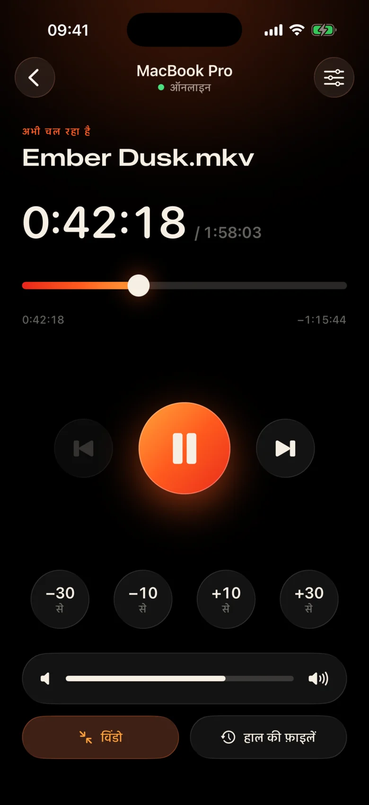
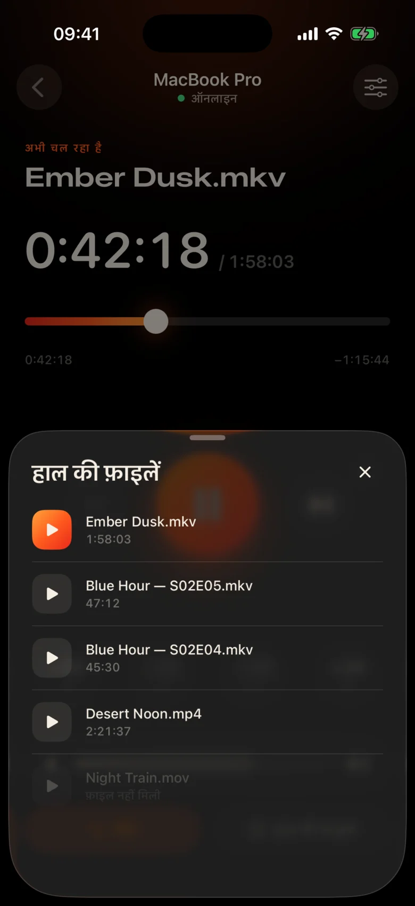
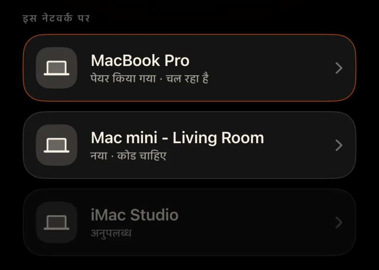
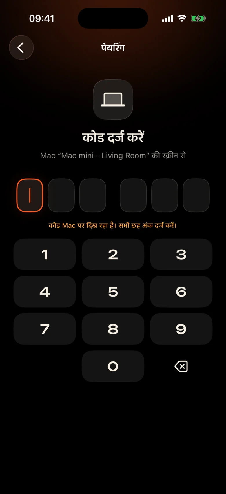

Mac पूरे कमरे में है
इसे दीवार के पास प्रोजेक्टर में प्लग किया गया है। प्रत्येक विराम का अर्थ है उठना, अंधेरे में ट्रैकपैड ढूंढना और एक छोटे नियंत्रण बार पर नज़र डालना।
Kinrox: अपने हाथ में फोन पर टैप करके रोकें।
Kinrox आपके Mac पर कोई भी वीडियो चलाता है - और आपके iPhone को अपने रिमोट में बदल देता है। प्रोजेक्टर पर MacBook, आप सोफे पर: रुकें, 10 सेकंड पीछे जाएं, वॉल्यूम कम करें या कंबल छोड़े बिना अगला एपिसोड शुरू करें।


इसे दीवार के पास प्रोजेक्टर में प्लग किया गया है। प्रत्येक विराम का अर्थ है उठना, अंधेरे में ट्रैकपैड ढूंढना और एक छोटे नियंत्रण बार पर नज़र डालना।
Kinrox: अपने हाथ में फोन पर टैप करके रोकें।
एक दृश्य में फुसफुसाहट, अगले में विस्फोट - और अगले कमरे में पहले से ही कोई सो रहा है।
Kinrox: आपके अंगूठे के ठीक नीचे एक वॉल्यूम स्लाइडर।
आईपी पते और पासवर्ड वाले वेब पैनल, एक ब्राउज़र टैब जो निष्क्रिय हो जाता है, डेस्क के लिए बने बटन - सोफे के लिए नहीं।
Kinrox: आपके Mac को स्वयं ढूंढता है, एक कोड के साथ जोड़ता है।

बड़े लक्ष्य, एक गहरी गर्म थीम और हर प्रेस के नीचे हैप्टिक्स का एक हल्का टैप। आप फिल्म से नज़र हटाए बिना इसका उपयोग कर सकते हैं।
बटन इतने बड़े हैं कि उनींदे होने पर भी आसानी से दबा सकें।
एक पंक्ति छूट गई? एक बार पीछे टैप करें. दो के साथ परिचय छोड़ें.
Kinrox का अपना वॉल्यूम, 0 से 100 तक। Mac का सिस्टम वॉल्यूम अछूता रहता है।
पिछली और अगली फ़ाइल एक ही फ़ोल्डर से, Finder क्रम में।
कुछ ऐसा चुनें जो आपने पहले देखा हो - यह Mac पर खुलता है।
टाइमलाइन को किसी भी क्षण खींचें, सोफे से फ़ुलस्क्रीन स्विच करें।
कोई आईपी पता नहीं, कोई पासवर्ड नहीं, कोई खाता नहीं। पहले कोड के बाद आपका iPhone अपने आप पुनः कनेक्ट हो जाता है।
किसी फ़ाइल को Kinrox में खींचें या ⌘ O दबाएँ। रिमोट सर्वर डिफ़ॉल्ट रूप से चालू है.
जब दोनों डिवाइस एक ही वाई-फाई पर हों तो Kinrox अपने आप दिखाई देता है।

Mac एक कोड दिखाता है जो दो मिनट तक रहता है। तीन गलत प्रयास और यह चला गया।


Alex’s iPhone Kinrox को नियंत्रित करना चाहता है। यह कोड फ़ोन पर दर्ज करें।
 कोड 1:47 में समाप्त होगा
कोड 1:47 में समाप्त होगा
वीडियो इंटरफ़ेस है. जरूरत पड़ने पर कांच की एक पतली परत दिखाई देती है और तीन सेकंड के बाद छिप जाती है।

libmpv पर निर्मित, mpv और IINA के पीछे का इंजन। एम्बेडेड या बाहरी ऑडियो और उपशीर्षक चुनें। VideoToolbox हार्डवेयर डिकोडिंग को संभालता है।
Kinrox वीडियो को फ़ोल्डर में पंक्तिबद्ध करता है और एपिसोड समाप्त होने पर अगला शुरू करता है - Finder की तरह, "10" से पहले "2"।
कीबोर्ड ⏯ कुंजियाँ, नियंत्रण केंद्र और अभी चल रहा नियंत्रण Kinrox। 20 नवीनतम फ़ाइलें स्टार्ट स्क्रीन पर प्रतीक्षा करती हैं।
आपका Mac और iPhone सीधे आपके स्थानीय नेटवर्क पर प्लेबैक कमांड का आदान-प्रदान करते हैं। आपके वीडियो Mac पर बने रहेंगे।
Bonjour पर खोज, केवल आपके अपने सबनेट से कनेक्शन। सार्वजनिक पते और सेल्युलर से इनकार कर दिया जाता है।
प्रत्येक कमांड एक एन्क्रिप्टेड चैनल में यात्रा करता है। पेयरिंग टोकन दोनों डिवाइस पर कीचेन में रहते हैं।
X25519HKDF-SHA256ChaCha20-Poly1305कोई खाता या उपयोग विश्लेषण नहीं. Mac विशिष्ट पहचानकर्ताओं या सिस्टम प्रोफाइलिंग के बिना प्रतिदिन एक सार्वजनिक अद्यतन फ़ीड की जाँच करता है। इस वेबसाइट में कोई विश्लेषण या कुकीज़ नहीं है।
रिमोट शीर्षक और अवधि देखता है, पथ कभी फ़ाइल नहीं करता। हाल की फ़ाइल खोलने का समाधान Mac पर किया गया है।
Swift 6 में Kinrox लिखा है और libmpv के ऊपर SwiftUI लिखा है। प्लेयर, रिमोट और प्रोटोकॉल की प्रत्येक पंक्ति GitHub पर है।
बिल्ड# Xcode 26.5, XcodeGen and mpv from Homebrew
brew install xcodegen mpv pkg-config
git clone https://github.com/awaik/Kinrox.git
cd Kinrox
cp -n Config/Signing.local.xcconfig.example \
Config/Signing.local.xcconfig
# Set your team: docs/runbooks/RUNBOOK-BUILD-AND-SIGNING.md
./Scripts/check-env.sh
./Scripts/generate.sh
xcodebuild -workspace Kinrox.xcworkspace \
-scheme PlayerMac -configuration Debug \
-destination 'platform=macOS,arch=arm64' \
-derivedDataPath DerivedData build
open DerivedData/Build/Products/Debug/Kinrox.appजब Mac और iPhone एक वाई-फाई नेटवर्क साझा करते हैं तो प्लेबैक और रिमोट कंट्रोल इंटरनेट एक्सेस के बिना काम करता है। Mac दैनिक अपडेट जांच के लिए HTTPS का उपयोग करता है और जब आप इसे इंस्टॉल करना चुनते हैं तो अपडेट डाउनलोड करता है।
हाँ. Kinrox आपका Mac जो कुछ भी दिखाता है उस पर चलता है - एक प्रोजेक्टर, एचडीएमआई पर एक टीवी, या AirPlay से जुड़ा एक डिस्प्ले।
macOS 14 Sonoma या बाद के संस्करण पर Apple silicon के साथ Macs, और iOS 17 या बाद के संस्करण पर iPhones। Intel Macs अभी तक समर्थित नहीं है।
हाँ. प्रत्येक iPhone अपने स्वयं के कोड के साथ एक बार जुड़ता है; एक ही समय में अधिकतम चार रिमोट कनेक्ट किए जा सकते हैं। आप प्लेयर सेटिंग में उनमें से किसी को भी रद्द कर सकते हैं।
हाँ. Mac पर, ऑडियो और उपशीर्षक बटन या ऑडियो और उपशीर्षक मेनू का उपयोग करें। एम्बेडेड ट्रैक चुनें, नेस्टेड फ़ोल्डरों में बाहरी फ़ाइलें ढूंढें, या उपशीर्षक बंद करें। Kinrox अगले एपिसोड के लिए आपकी पसंद को याद रख सकता है।
कुछ नहीं. GNU GPL v3 के तहत Kinrox मुफ़्त और खुला स्रोत है।
Mac और iPhone के लिए Kinrox। मुफ़्त, खुला स्रोत, और मूवी नाइट्स के लिए बनाया गया।